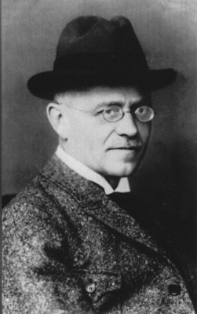

 Август Хорьх (нем. August Horch; 12 октября 1868, Виннинген — 3 февраля 1951, Мюнхберг) — один из первопроходцев немецкой автомобильной промышленности, инженер-конструктор и предприниматель, основатель компаний Horch и Audi. Внёс значительный вклад в развитие автомобилестроения, в том числе начал использовать карданную передачу, сверхпрочные виды стали и предложил расположение кресла водителя в левой части кузова автомобиля.
Август Хорьх родился 12 октября 1868 года в Виннингене, на Мозеле, в семье кузнеца. Семья жила небогато, и уже в 13 лет мальчик был вынужден бросить школу, чтобы помогать отцу. В 16 он устроился на вагоностроительный завод в Гейдельберге, где занимался более чем прозаическим делом — ударами кувалды напрессовывал стальные бандажи на колёса. Потом сменил еще несколько мест работы. Несомненно, в эти годы и сложились такие черты характера Хорьха, как целеустремлённость, напористость и… неуживчивость. Лишь в 20 лет он, наконец, получил возможность серьёзно учиться. Осенью 1888 года, сдав экзамены, поступил в Саксонское инженерное училище в Миттвайде. Кстати, здесь получал образование и Йорген Скафт Расмуссен — инженер и предприниматель, с которым Хорьха через много лет судьба свела в руководстве концерном Auto-Union. После окончания училища Хорьх работал на литейном заводе в Ростоке, а затем — в конструкторском бюро лейпцигской судостроительной фирмы, где занимался двигателями торпедных катеров. Именно здесь, в Лейпциге, Хорьх в 1896 году впервые увидел, автомобиль — Benz Velo. Это произвело на него такое впечатление, что он обратился с письмом к Карлу Бенцу с просьбой принять его на работу. И в ответ его действительно пригласили в Мангейм. Хорьх получил у Бенца должность руководителя производства и занимал её три года. Но, в конце концов, неуживчивый характер дал о себе знать. «Папа Бенц» (так называл его Хорьх) был для молодого шефа производства слишком консервативен. А так хотелось самому пробовать свои силы, тем более за плечами был уже опыт, приобретенный под руководством изобретателя автомобиля. Хорьх заручился финансовой поддержкой одного богатого промышленника и в 1899 году основал в Эрендфельде, под Кёльном, фирму A. Horch & Со. Штат компании первоначально составлял 11 человек. Тем не менее в 1900 году из ворот предприятия вышел первый автомобиль Хорьха. Его двухцилиндровый мотор мощностью 4-5 л.с. отличался тихой и ровной работой — конструктор изо всех сил старался превзойти учителя. Двигатель располагался спереди, привод на задние колеса осуществлялся кожаным ремнём. Коробка передач была сблокирована с главной передачей — очень смелое для того времени решение. Кузов заказали в кёльнской мастерской «Утермоль». Таким было начало знаменитой впоследствии марки.
Через два года был выпущен Horch Model 2 уже с карданным валом, с шестернями главной передачи из хромоникелевой стали. Двухцилиндровый мотор развивал 10-12 л. с., к его созданию Хорьх привлек способного инженера Фрица Зейделя (Fritz Seidel). После рождения второй модели фирма переехала в Рейхенбах. Здесь число сотрудников достигло уже девяноста — дела шли в гору. А Хорьх тем временем вовсю работал над следующей «моделью 3» с четырёхцилиндровым двигателем мощностью 16-20 л. с. В 1903 году фирма переехала во второй и последний раз — теперь в Цвиккау. Хорьх нашел дополнительные средства, и уставный капитал акционерного общества достиг 140 тыс. марок — сумма по тем временам немалая. Завод выпустил Horch Model 4 с четырехцилиндровым мотором рабочим объемом 2600 см³ и мощностью 14-17 л. с. Автомобиль полностью отвечал требованиям начала века — двойное зажигание от магнето и аккумулятора, трехступенчатая коробка передач, пневматические шины. Надо отдать должное Хорьху: его конструкции можно назвать не просто прогрессивными, а, скорее, смелыми. В 1906—1909 гг. успехом пользовался Horch-Z с 22-сильным (2725 см³) мотором: было построено 307 экземпляров. Глава фирмы был поглощен не только конструированием. Он методично наращивал её капитал, который за два года вырос до 525 тыс. рейхсмарок. Август Хорьх и здесь проявил характер. На заводе действовала жесточайшая система штрафов — любое нарушение имело свою цену. Так, опоздание от 5 до 15 минут «стоило» 25 пфеннигов, а до получаса — уже 40. Рабочий день на заводе продолжался 10,5 часа. В 1906 году автомобили из Цвиккау экспонировались в Берлинском и Парижском автосалонах, а годом позже был представлен первый шестицилиндровый Horch с двигателем рабочим объемом 8 л мощностью 60 л. с. Большой, роскошно отделанный автомобиль купил султан острова Ява.
Хорьх был одним из тех, кто прекрасно понимал рекламное значение автогонок. На соревнованиях за руль автомобиля садились известный немецкий автомобилист доктор Штёсс (Stoss) и сам конструктор. Когда в 1906 году появилась модель ZD с четырехцилиндровым (5800 см³) двигателем мощностью 40 л. с., на её шасси построили спортивный кузов торпедо. Автомобиль участвовал в гонках на Приз Генриха Прусского, но, увы, неудачно. Эта неудача имела серьезные последствия — она усилила уже накопившиеся разногласия Хорьха с акционерами, всё чаще заявлявшими о том, что его конструкции «авантюрны». Хорьх еще в те годы выступал за создание несущего кузова, приводя в пример кузова конных экипажей, многие из которых действительно были несущими. Но в начале века эта идея казалась совершенно фантастической. Идти на компромиссы Хорьх не умел. И вот 19 июня 1909 года создателю фирмы пришлось её покинуть. Конструктору выплатили смехотворную компенсацию — 25 тыс. рейхсмарок, в то время как Horch-ZD стоил 15 тысяч. Уже через 4 недели в том же Цвиккау он основал новую фирму — "August Horch Automobilwerke GmbH". Но и первая основанная им фирма носила имя «Horch», поэтому новые её хозяева подали иск в суд и выиграли дело. В доме одного из компаньонов Хорьха шли по этому поводу бурные дебаты. Легенда гласит, что в это время в соседней комнате сын хозяина учил латынь. И когда один из акционеров воскликнул: «Выслушайте и другую сторону!», мальчик то ли в шутку, то ли совершенно серьезно громко перевел эту фразу на латынь: «Audiatur et altera pars!» Спорщики сообразили, что «horch» (в немецком языке — «слушай, прислушивайся») переводится на латинский как «audi». Новая фирма получила название "Audi Automobilwerke GmbH".
«Я при всех обстоятельствах стремился строить только большие и хорошие автомобили из первоклассного материала», — сказал Хорьх, разворачивая дела на новой фирме. И действительно, завод начал с довольно солидных и мощных машин. С 1910 года выпускался Audi-AU/22. Цилиндры, как тогда было принято, были сблокированы попарно. Четырехцилиндровый мотор рабочим объемом 2612 см3 развивал 22 л. с. Фирма рекламировала себя большими плакатами со словом «Audi» и изображением огромного уха. Так появилась одна из самых известных и поныне марок автомобилей. Уже в 1911 году фирма представила ряд новых моделей. Одна из них — В10/28 с 28-сильным двигателем, - участвовала во второй Австрийской альпийской гонке. Водителями были сам Хорьх, Граумюллер и Ланге. Команда закончила дистанцию без штрафных очков. В том же году увидел свет С14/35 — самый прославленный автомобиль фирмы. «Четверка» рабочим объемом 3500 см3 мощностью 35 л. с. позволяла ему легко разгоняться до 100 км/ч. На этом Audi-С в 1912 году был выигран переходящий альпийский приз, и машина получила имя «Alpensieger» — покоритель Альп. Модель С выпускали до 1925 года — всего изготовили 1116 экземпляров.